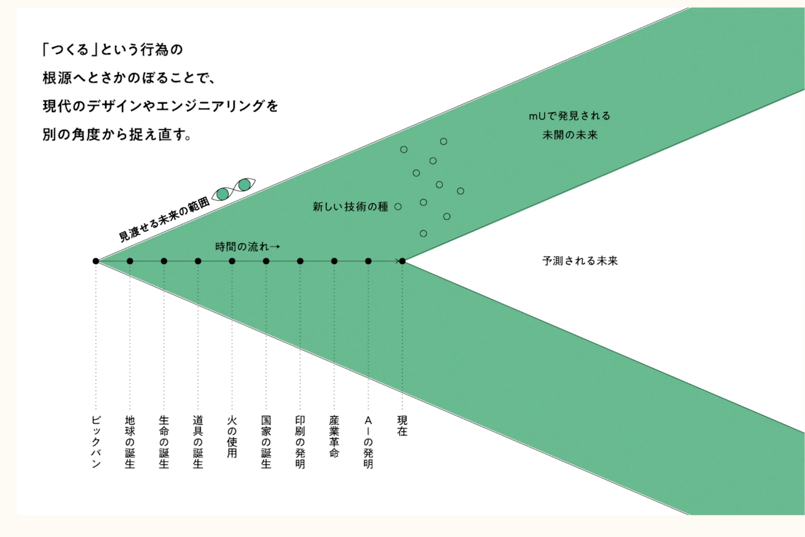

人間と技術、技術と哲学。
その不可分性が切実になった時代に
七沢智樹
2026.08.25 TUE 19:00— ／ ONLINE ／ 宇野さん レクチャー
Technel合同会社 代表
山梨県立大学 特任教授
京都大学で農学を学んだのち、公認会計士、技術開発の現場を経て、技術哲学へ。
マイナーな学問が、なぜいま切実なのか。2つの不可分性と、実質的な技術決定論と、テクノロジーのジレンマ。だから、問いの形を変える必要がある。
5つの考え方——生まれながらのサイボーグ、関係性、ゲシュテル、技術多様性。突き詰めると、乗り越えるべきものが二つ見えてくる。
西表島の体験から、技術の基層へ。教科書はないから、技術史を掘る。「未開の未来」という発想と3つの事例。最後に、はじめの問いに戻って論証する。
技術哲学への招待。まったくメジャーではないこの学問が、なぜいま切実なのか——その理由から始めます。
起きる時刻を決めたのは、あなたか、通知か。そもそも時計も、作られたもの。
今日の「世の中」は、フィードが選んだ順番で届く。
AIに下書きさせる。考えの筋も、言い回しも、少しずつ寄っていく。
買うもの、観るもの、会う人。候補はレコメンドが並べたもの。
仕事を辞めるか、別れるか。人ではなく、AIに聞く人が現れている。
人間が好き。人間とは何か、人間の悩みを考えたい。
その反対側にある技術には、興味がない。
技術と哲学の、あいだの学問。
ゆえに両側から、構造的に無視されることになる。
実際に作ってなんぼだと考えている。
哲学は付属物にすぎない。人間とは何かは、後から考えればいい。
この2つが、もう成り立たない。
「誰を撃つか」を、
先に絞り込むのは
アルゴリズムである。
誰を生かし、誰を採用し、
誰を信用するかを決めるのは——
テクノロジーである。
技術決定論に陥る理由——その駆動力を、並べてみる。
「技術決定論」は間違った考えの典型とされている。しかし現実は、そのように動いてしまっているのでは？
人間が好き。人間とは何か、人間の悩みを考えたい。技術には興味がない。
しかし、人間のあり方はもう技術と分けられない。技術を問わずに、人間は問えない。
技術は単なる道具ではなく、人間や社会のあり方を形成する。
——この一点が、いま両側にとって他人事ではなくなった。
両側とも、ここをやるべきでは？実際に作ってなんぼ。哲学は付属物にすぎない。人間とは何かは、後から考えればいい。
しかし、何をつくるべきかの判断は、技術の内側からは出てこない。
船内の計器を調べている間にも、船は高速で進んでいる。
「AIとは何か」「テクノロジーとは何か」「人間はどうあるべきか」——といった問いだった。
〈人間＋テクノロジー〉の船は、どこへ向かうのか。誰が航路を描いたのか。その航路は、望ましいのか。
技術哲学の中身。いま何が、どう問われているのか。
大前提全員が同意する出発点。ここから技術哲学が始まる。
包丁は料理にも凶器にもなる。善悪は使い手の側にあり、技術そのものは価値を持たない——という考え方。
道路が引かれれば人の流れが変わる。SNSが広まれば「話題」の形が変わる。技術は使われる前から、可能な行為の範囲を決めている。
人もモノも等しく「アクター」。銃を持った人は、銃なしの人とも、人なしの銃とも違う。
技術は人間と世界のあいだに立ち、知覚と行為を媒介する。眼鏡、望遠鏡、超音波診断。
「AIに意識はあるか」を確定してから扱いを決める——その順序をやめる。
技術も人間も、関係のなかで初めて何かになる。
ここでいう人間とは、西洋近代的人間観——世界から独立した自律的な主体。「自然の主人にして所有者」。第1部で取り消し線を引いた、あの人間像。
これを中心から降ろすのがポストヒューマニズム。しかし欧米の議論は看板ばかりで、脱しきれていない。「人間を超えた」と語っているのは、やはり人間である。
人間を降ろした席に、今度はテクノロジーを座らせる道もある——トランスヒューマニズム。能力拡張、脳とAIの接続、そして不死。
しかし中心が入れ替わっただけで、「中心が一つある」という構造はそのまま残る。近代のテクノロジー観そのものは、無傷である。
技術は便利な道具。使い方次第で、人間がコントロールできる。
技術は自律的に発展し、それが人類を前進させる。
技術は人間性を蝕む。人間の側を守らなければならない。
技術は自律的に発展し、人間は支配され、置き換えられる。
ここからは、七沢の考えです。理論からではなく、身体から入ります。
七沢の体験身体から確かめる
京都大学で農学を学んだあと、西表島の奥地へ。インフラもなく、時計もない。島の人に学びながら、狩猟採集をし、火を起こし、塩をつくり、道具をつくる——そういう滞在を、通算で数か月続けた。
火を起こせなければ、食えない。刃物がなければ、何も加工できない。人間の身体は、裸のままではこの島で一日ももたない。しかし同時に——本当に必要な道具は、驚くほど少ない。

実際の技術史は、枝分かれと傍流と絶滅に満ちている。失われた枝は失敗作ではなく別の世界観の化石——神話と風土を道具に、ここを掘り起こす。
西表島の奥地に、厳選した道具だけで滞在する。原初のサイボーグ・アンラーン・技術の基層が、そのまま身体の経験として現れる。
人が都市に集中していく五千年の流れの外に、人が生きられる場所のかたちはないのか。分野を横断して数百年先を考え、最先端の技術で、その土地の素材から美しい場所をつくる。
eijipress.co.jp/products/2350デジタルネイチャー化した世界で、人間の実存はどこにあるのか。既存の価値体系の周縁で、「運ゲー」的な環境に身を委ねて新たな価値を生む心性＝「マタギ」的。中心ではなく、辺縁へ。
hanmoto.com／マタギドライヴ私有地でありながら公共に開かれ、人が人間以外の「事物」と関わる場。人間が完全には支配できない生成の側に、場所をひらく。ケア、民藝、中動態、作庭から構想される、もうひとつの公共。
kodansha.co.jp／庭の話「異なる技術」は、遠くではなく
日常の中に、すでに
たくさん埋め込まれている。異なる技術の可能性を、日常の中で、いま、いかに発見するか——その試みこそが大切だ。西表島のジャングルや古文書の中だけの話ではない。台所に、畑に、路地に、言葉づかいに、別の系譜の技術は生きている。そして庭は、すでにあちこちにある。